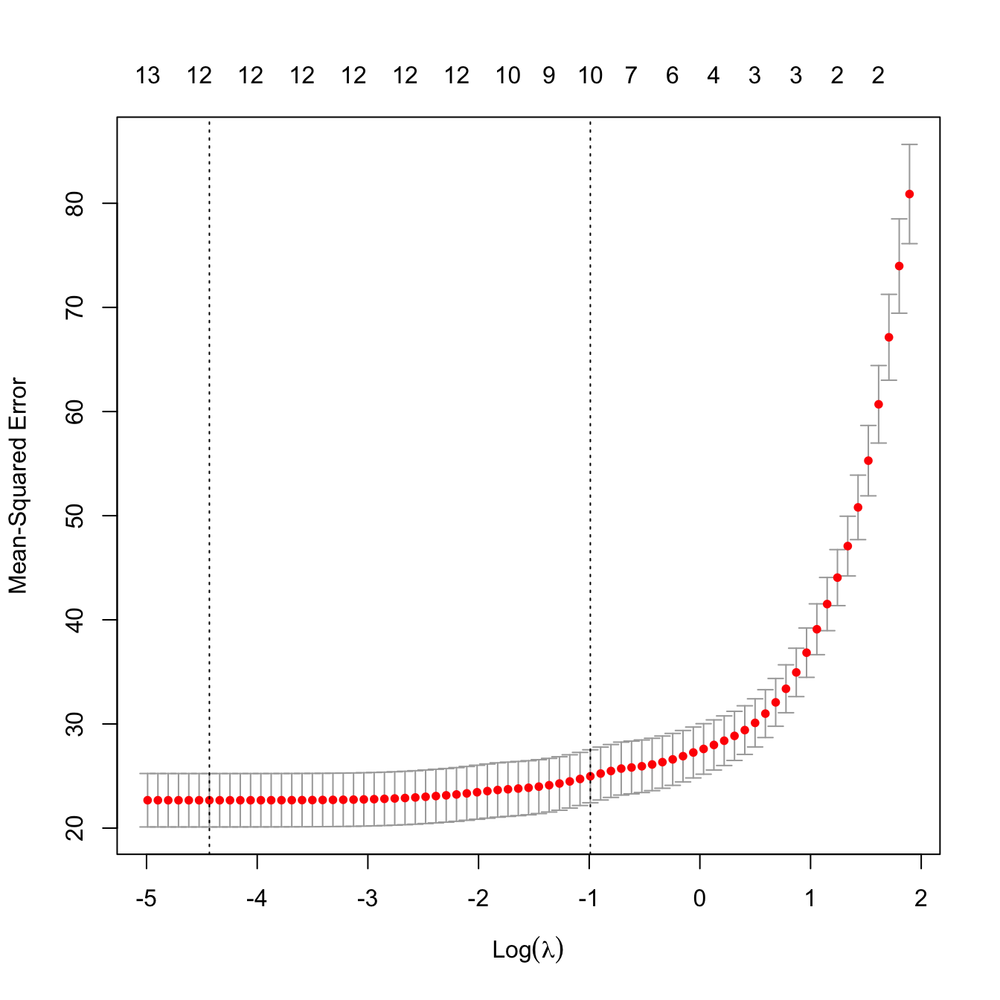

3.17 TIL20220317
3.17.1 분산분석
분산분석(analysis of variance, ANOVA)은 여러 모집단 간의 평균의 동일성을 검정한다.11
- 일원분산분석 (one-way ANOVA)
- 이원분산분석 (two-way ANOVA)
- 공분산분석 (analysis of corvariance, ANCOVA)
- 반복측정 분산분석 (repeated measures ANOVA)
- 다변량 분산분석 (multivariate analysis of variance, MANOVA)
- 다변량 공분산분석 (multivariate analysis of covariance, MANCOVA)
3.17.2 페널티 회귀분석 - 2
## 'data.frame': 506 obs. of 14 variables:
## $ crim : num 0.00632 0.02731 0.02729 0.03237 0.06905 ...
## $ zn : num 18 0 0 0 0 0 12.5 12.5 12.5 12.5 ...
## $ indus : num 2.31 7.07 7.07 2.18 2.18 2.18 7.87 7.87 7.87 7.87 ...
## $ chas : int 0 0 0 0 0 0 0 0 0 0 ...
## $ nox : num 0.538 0.469 0.469 0.458 0.458 0.458 0.524 0.524 0.524 0.524 ...
## $ rm : num 6.58 6.42 7.18 7 7.15 ...
## $ age : num 65.2 78.9 61.1 45.8 54.2 58.7 66.6 96.1 100 85.9 ...
## $ dis : num 4.09 4.97 4.97 6.06 6.06 ...
## $ rad : int 1 2 2 3 3 3 5 5 5 5 ...
## $ tax : num 296 242 242 222 222 222 311 311 311 311 ...
## $ ptratio: num 15.3 17.8 17.8 18.7 18.7 18.7 15.2 15.2 15.2 15.2 ...
## $ black : num 397 397 393 395 397 ...
## $ lstat : num 4.98 9.14 4.03 2.94 5.33 ...
## $ medv : num 24 21.6 34.7 33.4 36.2 28.7 22.9 27.1 16.5 18.9 ...set.seed(123)
train.index <- createDataPartition(y = Boston$medv, p = 0.7, list = F)
Boston.train <- Boston[train.index, ]
Boston.test <- Boston[-train.index, ]
Boston.test.x <- model.matrix(medv ~ ., Boston.test)[, -1]
Boston.test.y <- Boston.test$medv
Boston.split <- rbind(Train.Data = nrow(Boston.train), Test.Data = nrow(Boston.test))
colnames(Boston.split) <- c("Number"); Boston.split## Number
## Train.Data 356
## Test.Data 150glmnet 패키지 내 glmnet() 함수를 통해 페널티 회귀분석을 수행할 수 있다. glmnet() 함수는 인자로 결과변수 y는 벡터로 예측변수 x는 행렬 형태로 제공해야 한다. 추가로 연속형 변수만 처리 가능하므로 범주형 변수는 사전에 더미변수로 변환해야 한다.
- family = 결과변수의 확률분포, gaussian, binomial 등
- alpha = 0(Ridge), 1(Lasso), 0~1(ElasticNet)
- lambda = 패널티 크기 조절, 예측오차를 최소화 하는 람다 설정, 교차검정을 통해 설정
##
## The downloaded binary packages are in
## /var/folders/24/8k48jl6d249_n_qfxwsl6xvm0000gn/T//RtmpqEz6Im/downloaded_packages## crim zn indus chas nox rm age dis rad tax ptratio black lstat
## 1 0.00632 18.0 2.31 0 0.538 6.575 65.2 4.0900 1 296 15.3 396.90 4.98
## 4 0.03237 0.0 2.18 0 0.458 6.998 45.8 6.0622 3 222 18.7 394.63 2.94
## 10 0.17004 12.5 7.87 0 0.524 6.004 85.9 6.5921 5 311 15.2 386.71 17.10
## 12 0.11747 12.5 7.87 0 0.524 6.009 82.9 6.2267 5 311 15.2 396.90 13.27
## 13 0.09378 12.5 7.87 0 0.524 5.889 39.0 5.4509 5 311 15.2 390.50 15.71
## 16 0.62739 0.0 8.14 0 0.538 5.834 56.5 4.4986 4 307 21.0 395.62 8.473.17.2.1 Lasso Regression
set.seed(123)
Boston.cv <- cv.glmnet(x = x, y = y, family = "gaussian", alpha = 1) # Lasso
plot(Boston.cv)
왼쪽의 점선은 예측오차를 최소화하는, 즉 예측 정확도를 가장 크게하는 로그 람다값을 나타낸다. Lasso 회귀분석에서는 영향력이 작은 예측변수의 회귀계수를 0으로 만들어 제거할 수 있다. 우측 상단의 예측변수 개수에서 확인이 가능하다.
## lambda.min lambda.min.log
## [1,] 0.01189058 -4.432009예측 정확도와 모델 간명도를 고려하여 최소 예측 오차의 1개 표준편차 이내에 있으면서 예측변수의 개수를 최소화하는 람다를 제공한다.
## lambda.1se lambda.1se.log
## [1,] 0.3716657 -0.9897604cbind(lambda.min = coef(Boston.cv, Boston.cv$lambda.min), lambda.1se = coef(Boston.cv, Boston.cv$lambda.1se))## 14 x 2 sparse Matrix of class "dgCMatrix"
## s1 s1
## (Intercept) 32.720731705 16.0297569500
## crim -0.087271032 -0.0139981876
## zn 0.027462832 .
## indus -0.045858550 -0.0166198270
## chas 2.904607308 2.0413930420
## nox -15.675976627 -2.5456625823
## rm 3.997011835 4.3113894194
## age . .
## dis -1.236733449 -0.2334310319
## rad 0.255230956 .
## tax -0.009918317 -0.0007771602
## ptratio -0.920530277 -0.7681696792
## black 0.008606410 0.0061710231
## lstat -0.481377769 -0.4700816156lambda.min은 1개의, lambda.1se는 3개의 예측변수가 제거되었다.
Boston.gnet1 <- glmnet(x = x, y = y, family = "gaussian",
alpha = 1,
lambda = Boston.cv$lambda.min)
Boston.pred1 <- predict(Boston.gnet1, newx = Boston.test.x)
postResample(pred = Boston.pred1, obs = Boston.test.y)## RMSE Rsquared MAE
## 5.1150340 0.7197637 3.3091787Boston.gnet2 <- glmnet(x = x, y = y, family = "gaussian",
alpha = 1,
lambda = Boston.cv$lambda.1se)
Boston.pred2 <- predict(Boston.gnet2, newx = Boston.test.x)
postResample(pred = Boston.pred2, obs = Boston.test.y)## RMSE Rsquared MAE
## 5.5656605 0.6795993 3.61517773.17.2.2 ElasticNet Regression
ElasticNet읜 L2-norm, L1-norm 페널티항을 설정해야 하므로 최적의 alpha값을 산출해야 한다. caret 패키지 내 train() 함수를 이용한다.
set.seed(123)
Boston.cv <- train(form = medv ~ ., data = Boston.train, method = "glmnet",
trControl = trainControl(method = "cv",
number = 10),
tuneLength = 10)
Boston.cv$bestTune## alpha lambda
## 6 0.1 0.2020812Boston.gnet <- glmnet(x = x, y = y, family = "gaussian",
alpha = Boston.cv$bestTune$alpha,
lambda = Boston.cv$bestTune$lambda)
coef(Boston.gnet)## 14 x 1 sparse Matrix of class "dgCMatrix"
## s0
## (Intercept) 29.766401348
## crim -0.078819914
## zn 0.021807176
## indus -0.064680920
## chas 2.966225220
## nox -13.617871871
## rm 4.056442437
## age .
## dis -1.097715391
## rad 0.194940136
## tax -0.007343684
## ptratio -0.891291598
## black 0.008443963
## lstat -0.466614849Boston.pred <- predict(Boston.gnet, newx = Boston.test.x)
postResample(pred = Boston.pred, obs = Boston.test.y)## RMSE Rsquared MAE
## 5.1766444 0.7148912 3.31159413.17.3 모델별 비교
lambda <- 10^seq(-1, 5, length = 100)
# ridge
set.seed(123)
ridge <- train(form = medv ~ ., data = Boston.train, method = "glmnet",
trControl = trainControl(method = "cv",
number = 10),
tuneGrid = expand.grid(alpha = 0, lambda = lambda))
coef(ridge$finalModel, ridge$bestTune$lambda)## 14 x 1 sparse Matrix of class "dgCMatrix"
## s1
## (Intercept) 26.531756149
## crim -0.074428914
## zn 0.017800440
## indus -0.084013662
## chas 3.079990715
## nox -10.929321371
## rm 4.075749392
## age -0.003350370
## dis -0.950562016
## rad 0.143524673
## tax -0.005528583
## ptratio -0.844792464
## black 0.008418506
## lstat -0.433322899## RMSE Rsquared MAE
## 5.2697535 0.7078302 3.3430299# lasso
set.seed(123)
lasso <- train(form = medv ~ ., data = Boston.train, method = "glmnet",
trControl = trainControl(method = "cv",
number = 10),
tuneGrid = expand.grid(alpha = 1, lambda = lambda))
coef(lasso$finalModel, lasso$bestTune$lambda)## 14 x 1 sparse Matrix of class "dgCMatrix"
## s1
## (Intercept) 27.091673886
## crim -0.057263747
## zn 0.011752233
## indus -0.060580843
## chas 2.817475257
## nox -11.877653738
## rm 4.155604866
## age .
## dis -0.934714973
## rad 0.114348391
## tax -0.004015459
## ptratio -0.877240341
## black 0.007739894
## lstat -0.477162631## RMSE Rsquared MAE
## 5.245637 0.708739 3.362308# lasso
set.seed(123)
elastic <- train(form = medv ~ ., data = Boston.train, method = "glmnet",
trControl = trainControl(method = "cv",
number = 10),
tuneLength = 10)
coef(elastic$finalModel, elastic$bestTune$lambda)## 14 x 1 sparse Matrix of class "dgCMatrix"
## s1
## (Intercept) 29.765523097
## crim -0.078486897
## zn 0.021723671
## indus -0.064825528
## chas 2.965478459
## nox -13.585240410
## rm 4.054072843
## age .
## dis -1.097151673
## rad 0.194485494
## tax -0.007329651
## ptratio -0.891156341
## black 0.008442569
## lstat -0.467123628elastic.pred <- predict(elastic, Boston.test)
postResample(pred = elastic.pred, obs = Boston.test.y)## RMSE Rsquared MAE
## 5.1769223 0.7148754 3.3120692##
## Call:
## summary.resamples(object = resamples(models))
##
## Models: ridge, lasso, elastic
## Number of resamples: 10
##
## MAE
## Min. 1st Qu. Median Mean 3rd Qu. Max. NA's
## ridge 2.314983 3.095864 3.358949 3.350092 3.553519 4.758853 0
## lasso 2.334122 3.113956 3.355747 3.384424 3.536837 4.889416 0
## elastic 2.370271 3.091582 3.351099 3.369054 3.544919 4.741635 0
##
## RMSE
## Min. 1st Qu. Median Mean 3rd Qu. Max. NA's
## ridge 3.217597 4.220445 4.527056 4.702958 5.047501 6.966902 0
## lasso 3.259155 4.242220 4.489430 4.744627 5.168922 7.113506 0
## elastic 3.323486 4.222079 4.511393 4.699214 5.056862 6.952270 0
##
## Rsquared
## Min. 1st Qu. Median Mean 3rd Qu. Max. NA's
## ridge 0.5685060 0.7102964 0.7569726 0.7432102 0.7896808 0.8415753 0
## lasso 0.5567794 0.6909231 0.7576300 0.7387044 0.7934118 0.8391494 0
## elastic 0.5743693 0.7076979 0.7608565 0.7432037 0.7831245 0.8450374 0세 모델이 RMSE 관점에서 비슷한 성능을 보이는 것 같다. 통계적으로 유의한 차이가 있는지 검정해 본다.
##
## Call:
## summary.diff.resamples(object = diff(resamples(models), metric = "RMSE"))
##
## p-value adjustment: bonferroni
## Upper diagonal: estimates of the difference
## Lower diagonal: p-value for H0: difference = 0
##
## RMSE
## ridge lasso elastic
## ridge -0.041669 0.003744
## lasso 0.7838 0.045413
## elastic 1.0000 0.6350행렬의 대각선 위쪽은 모델간 차이, 아래쪽은 유의확률을 나타낸다. 세 모델 간 통계적 유의한 차이는 없는 것으로 확인된다. 따라서 간명도 관점에서 예측변수의 개수가 적은 모델을 선택하는 것이 바람직하다.